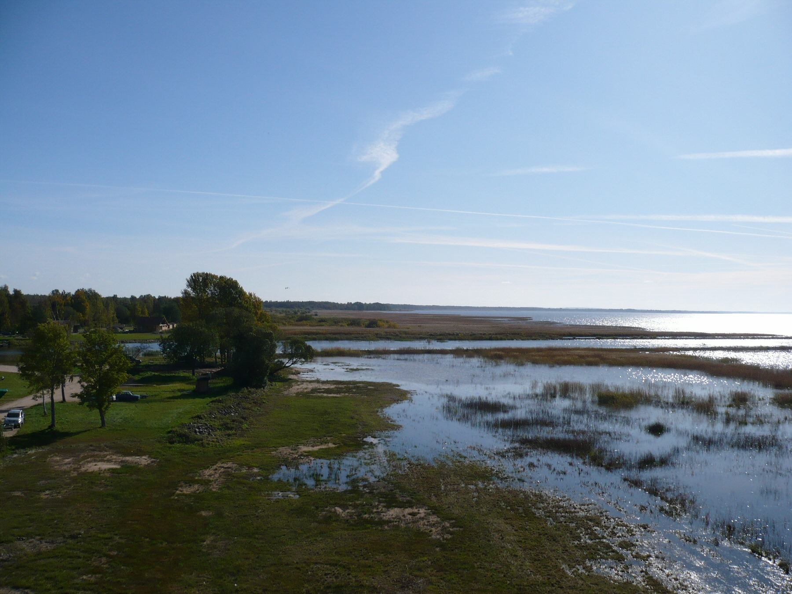

Paragraph with bold text here
First Paragraph in division
Second paragraph in divsion
I like to read The New York Times
I like to read boldly with emphasis
good tutorials at w3schools.com
this section is commented outI have lived in the following places
I lived in the following places in this order...
I am once again residing in Idaho.
What is Estonia like? See the following links..
I also have many photos from my life in Estonia. Take a look....
|  |
|
Sunset at the Baltic Sea...
Study Estonian with Estonian Textbook: Grammar and Coversation by Juhan Tuldava.
Estonian phrases
Estonian proverb says,
To speak is silver, to be silent is gold.
I lived in Washington for a couple of years. The Columbia river is really impressive...

Now living in Idaho again, and I have been to the Owyhee mountains...

Astronomy is a favorite past-time, especially watching the moon....

My university is BSU- Boise State University
Google is here GOOGLE
My favorite place...

Music....this is only a test and is not necessarily my favorite music
paragraph with
a line break